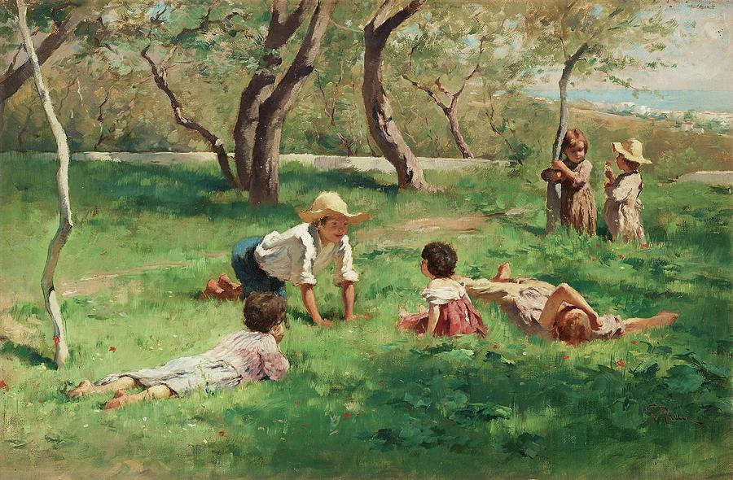

Poems
Mulch

All the mulch my brother has to buy is waiting for tomorrow and he’s telling me about what his yard will look like in a few years and I’ve been holding his baby for the past two hours, and if life weren’t schedules and obligations hopefully building something I’d stay on this couch forever, listening about how he’s going to plant one tree for every beloved child like our grandparents did for us, how we learned that love grows deeper the wider it can stretch. Except life is schedules and obligations and our grandparent’s house is some other family’s happy future memory, and I’m scared to drive by the past and see what’s not mine I don’t like going back anywhere, I’d much rather take my brother’s list of every way he can make life beautiful take the crickets and cicadas take weekends of old friends and bad movies, the seagulls, sea air breezing through trees, take the pistachio ice cream I ate because I was with a friend and forgot to fear fat. Take the cat showing me his fluffy belly, take the dresser from my mother’s childhood that Sarah helped lift four flights into my apartment. I’d rather take the bullfrogs and the fireflies and the hope the night I thought I knew where my life would go the way everything sang like my future involved a man and a home. Take the Palestinian embroidery my father gave to me take the wooden rocking chair he gave to my mother until she gave it to me. Take the bottles of wine drank with women on nights we swore we’d go out, only to stay in with a friendship’s scope of things to say. Take all the sleep I lost on nights I stayed up laughing with a lover. Take all the sleep I lost on nights a lover gave me the safety to cry. I want to take every bit of love and run with it until we reach a riverbed rippling and blue inside a quiet forest where they can stay unloseable. But, these things only shine under contrast: the ways we’ll die or forget or be unable to forgive. So I hold my niece as long as I can and listen to my brother talk about all the mulch he’s buying tomorrow so one day his kids can realize what he loves most is watching them grow.
Kate Miano is usually late to everything and makes an amazing vegetarian Bolognese. She has previously been published in december magazine, Remington Review, and Discretionary Love, among others.